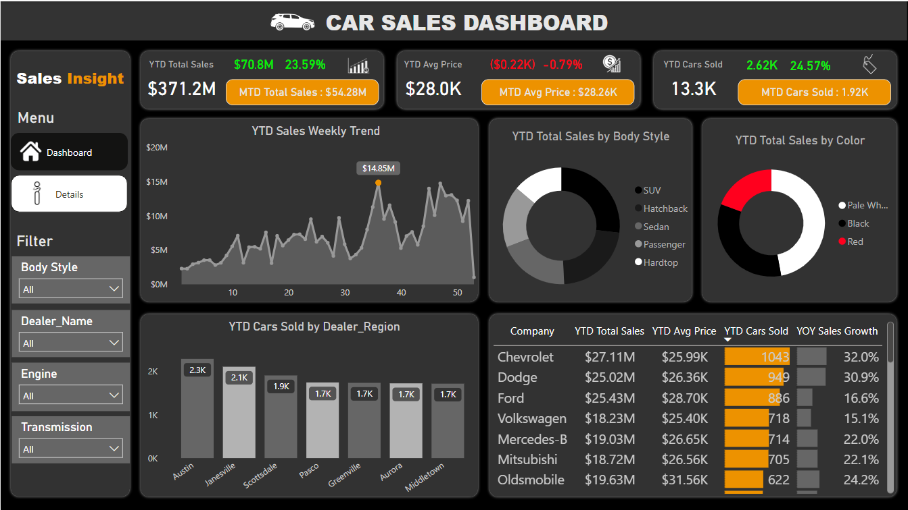

Car Sales Analysis
Cars Company want to gather insights and create an annual sales report. So that they can understand their sales and optimize strategies and drive business success in the automotive industry.

Cars Company want to gather insights and create an annual sales report. So that they can understand their sales and optimize strategies and drive business success in the automotive industry.
• Car company is a car dealership that sells various car models. To effectively track and analyse their sales performance, They need a comprehensive Car Sales Dashboard in Power BI.
• The objective of this project is to design and develop a dynamic and interactive Car Sales Dashboard using Power BI. The dashboard will visualize critical KPIs related to car sales, helping to understand their sales performance over time and make data-driven decisions.